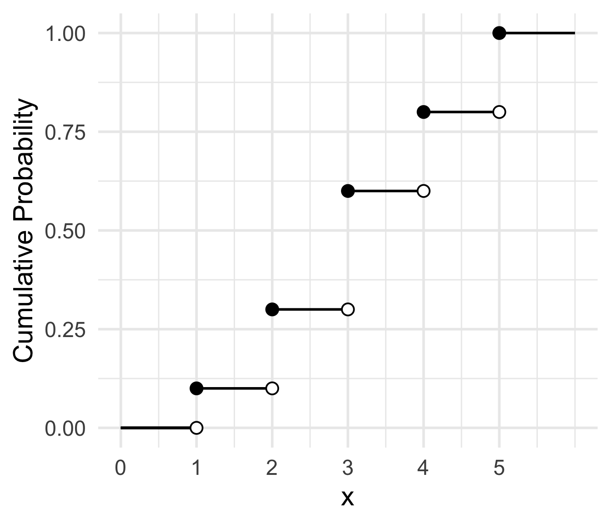
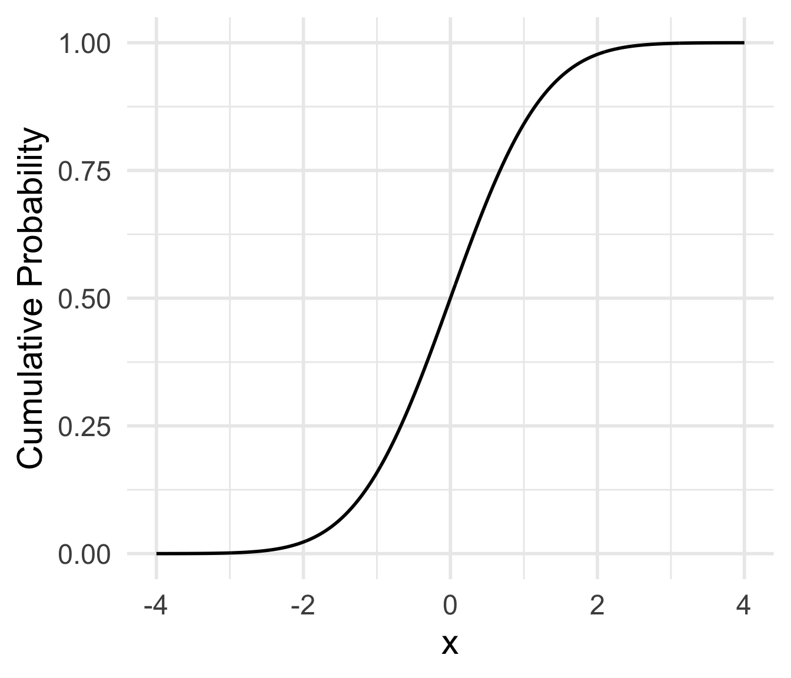
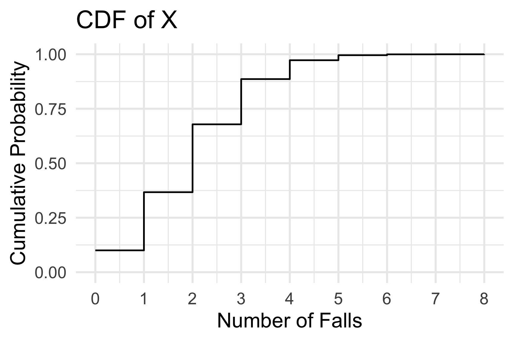
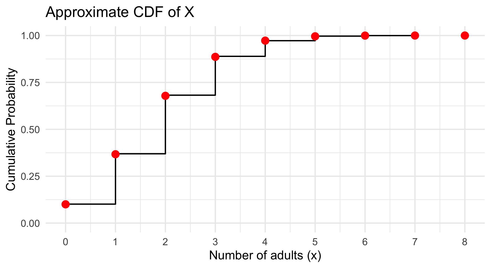
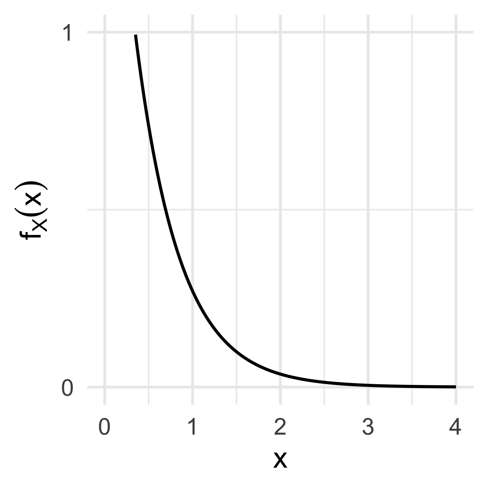
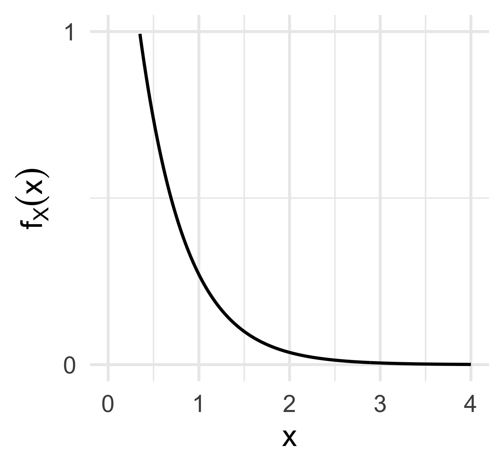
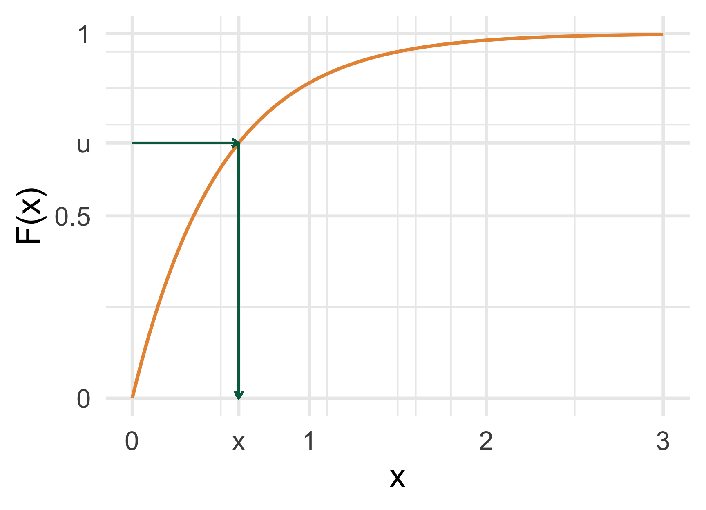
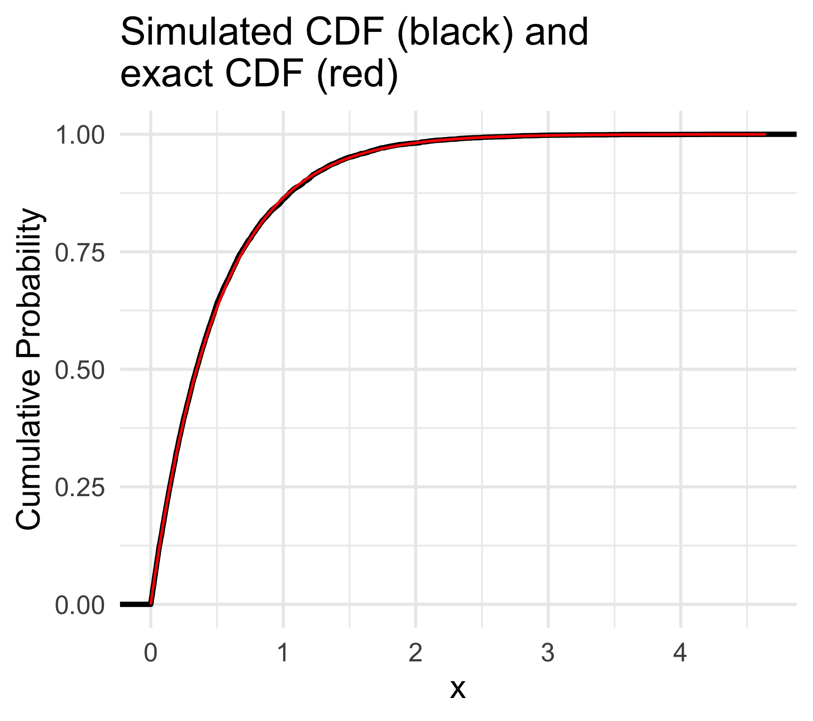

Lesson 9: Cumulative distribution functions (CDFs)
Nicky Wakim
2026-10-21
Learning Objectives
- Understand the definition of cumulative distribution functions (CDFs) for discrete and continuous random variables.
- Compute CDFs for given probability mass functions (pmfs).
- Compute CDFs for given probability density functions (pdfs) and pdfs from CDFs.
- Simulate a CDF with inverse CDF method.
Where are we?

Learning Objectives
- Understand the definition of cumulative distribution functions (CDFs) for discrete and continuous random variables.
- Compute CDFs for given probability mass functions (pmfs).
- Compute CDFs for given probability density functions (pdfs) and pdfs from CDFs.
- Simulate a CDF with inverse CDF method.
What is a cumulative distribution function?
Cumulative distribution function (CDF) for discrete random variable
The cumulative distribution function (cdf) of a discrete RV \(X\) with pmf \(p_X(x)\), is defined for every value \(x\) by \[F_X(x) = \mathbb{P}(X \leq x) = \sum \limits_{\{all\ y:\ y\leq x\}}p_X(y)\]
\(F(x)\) is increasing or flat (never decreasing)
\(\min\limits_x F(x) = 0\): the CDF starts at 0
\(\max\limits_xF(x)=1\): at the largest \(x\), all the probabilities have been summed, so the total is 1
The CDF of a discrete RV is a step function
Cumulative distribution function (CDF) for continuous random variable
The cumulative distribution function (cdf) of a continuous RV \(X\), is the function \(F_X(x)\), such that for all real values of \(x\), \[F_X(x)= \mathbb{P}(X \leq x) = \int_{-\infty}^x f_X(s)ds\]
In general, \(F_X(x)\) is increasing and
\(\lim_{x\rightarrow -\infty} F_X(x)= 0\)
\(\lim_{x\rightarrow \infty} F_X(x)= 1\)
\(P(X > a) = 1 - P(X \leq a) = 1 - F_X(a)\)
\(P(a \leq X \leq b) = F_X(b) - F_X(a)\)
How to define CDFs for discrete and continuous RVs?
Discrete RV \(X\):
- pmf: \(p_X(x) = P(X=x)\)
- CDF: \(F_X(x) = P(X \leq x) = \sum\limits_{\{all\ y:\ y\leq x\}} p_X(y)\)
Continuous RV \(X\):

- density: \(f_X(x)\)
- probability: \(P(a \leq X \leq b) = \int_a^b f_X(x)dx\)
- CDF: \(F_X(x) = P(X \leq x) = \int_{-\infty}^x f_X(s)ds\)
Learning Objective
- Understand the definition of cumulative distribution functions (CDFs) for discrete and continuous random variables.
- Compute CDFs for given probability mass functions (pmfs).
- Compute CDFs for given probability density functions (pdfs) and pdfs from CDFs.
- Simulate a CDF with inverse CDF method.
Revisiting Falls 1
Example 1: Falls in Older Adults
A major public health concern is falls among older adults (age 65+). National data suggests that 25% of older adults will experience at least one fall within a given year. A community health program is tracking a random group of \(n = 8\) older adults for one year. Assume the likelihood of falling is independent from person to person.
Let \(X\) be the random variable representing the number of individuals in this group who experience at least one fall.
- Write the CDF of \(X\).
- Use R to calculate the cumulative probability for each possible value of \(X\).
- Plot the CDF of \(X\).
- Simulate \(X\) for 10000 groups and plot the approximated CDF.
Recall our pmf, since \(X\) is a binomial RV: \[P(X = x) = \binom{8}{x} 0.25^x 0.75^{8-x}, x= 0, 1, 2, \dots, 8 \]
Revisiting Falls 1
Example 1: Falls in Older Adults
- Write the CDF of \(X\).
Recall our pmf: \[P(X = x) = \binom{8}{x} 0.25^x 0.75^{8-x}, x= 0, 1, 2, \dots, 8 \]
\[F_X(x) = P(X \leq x) = \sum \limits_{k=0}^{x} \binom{8}{k} 0.25^k 0.75^{8-k}\]
Revisiting Falls 2
Example 1: Falls in Older Adults
- Use R to calculate the cumulative probability for each possible value of \(X\).
- 1
- Save the two parameters: \(n = 8\) people and \(p = 0.25\) chance of a fall.
- 2
-
tibble()makes a table, which we save asfalls_cdf. - 3
-
The first column,
x, holds every possible value of \(X\): 0 through 8. - 4
-
pbinom()gives the cumulative probability \(P(X \leq x)\) for every value in thexcolumn. We useddbinom()in Lesson 7 for \(P(X = x)\).
Revisiting Falls 3
Example 1: Falls in Older Adults
- Plot the CDF of \(X\).
- 1
-
Put
xon the x-axis and the cumulative probabilityc_probon the y-axis. - 2
-
geom_step()connects the points with steps: flat, then a jump up at each value ofx. - 3
- Put a tick mark on every possible value, 0 through 8, and make the y-axis run from 0 to 1.
- 4
- Add a title and axis labels.
- 5
- Use a clean theme with larger text.

Revisiting Falls 4
Example 1: Falls in Older Adults
- Simulate \(X\) for 10000 groups and plot the approximated CDF.
- 1
- Set the random seed once, so everyone gets the same random numbers.
- 2
- The number of groups (simulations) we want.
- 3
-
rbinom()simulates the number of falls in each of the 10,000 groups, as in Lesson 7.n = repsis the number of values to draw,sizeis our \(n\) andprobis our \(p\). - 4
-
Start with the simulated values of
X. - 5
-
Group the simulations by the value of
X. - 6
-
n()counts the simulations in each group. Dividing byrepsgives the proportion, which approximates the pmf. - 7
-
cumsum()adds up the proportions as we go down the rows. Each row is now the approximate cumulative probability \(P(X \leq x)\).
- The approximate pmf and CDF:
- 1
-
Each row is a value of
X, the proportion of simulations with that value (prop) and the running total (approx_cdf).
# A tibble: 8 × 3
X prop approx_cdf
<int> <dbl> <dbl>
1 0 0.101 0.101
2 1 0.268 0.370
3 2 0.312 0.682
4 3 0.207 0.889
5 4 0.0834 0.972
6 5 0.0243 0.997
7 6 0.0029 1.000
8 7 0.0003 1 Revisiting Falls 4
Example 1: Falls in Older Adults
- Simulate \(X\) for 10000 groups and plot the approximated CDF.
Red dots: the exact CDF from
pbinom()Steps: the approximate CDF from the simulation
At home: try
reps <- 100and see how it affects the approximate CDF
Plot the approximate CDF of X
ggplot(falls_approx, aes(x = X, y = approx_cdf)) +
geom_step(linewidth = 1, color = "black") +
geom_point(data = falls_cdf, aes(x = x, y = c_prob),
color = "red", size = 5) +
scale_x_continuous(breaks = 0:n) +
scale_y_continuous(limits = c(0, 1)) +
labs(title = "Approximate CDF of X",
x = "Number of adults (x)",
y = "Cumulative Probability") +
theme_minimal(base_size = 20)- 1
- Steps for the approximate CDF from the simulation.
- 2
-
Add the exact CDF values from the
falls_cdftable as red dots. - 3
- Put a tick mark on every possible value, 0 through 8, and make the y-axis run from 0 to 1.
- 4
- Add a title and axis labels.
- 5
- Use a clean theme with larger text.

Learning Objective
- Understand the definition of cumulative distribution functions (CDFs) for discrete and continuous random variables.
- Compute CDFs for given probability mass functions (pmfs).
- Compute CDFs for given probability density functions (pdfs) and pdfs from CDFs.
- Simulate a CDF with inverse CDF method.
Let’s demonstrate the CDF with an example
Example 2
Let \(f_X(x)= 2\), for \(2.5 \leq x \leq 3\). Find \(F_X(x)\).
Derivatives of the CDF
Theorem 1
If \(X\) is a continuous random variable with pdf \(f_X(x)\) and cdf \(F_X(x)\), then for all real values of \(x\) at which \(F'_X(x)\) exists, \[\frac{d}{dx} F_X(x)= F'_X(x) = f_X(x)\]
Integrate the pdf to get the CDF
Take the derivative of the CDF to get the pdf
Finding the PDF from a CDF
Example 3
Let \(X\) be a RV with cdf \[F_X(x)= \left\{ \begin{array}{ll} 0 & \quad x < 2.5 \\ 2x-5 & \quad 2.5 \leq x \leq 3 \\ 1 & \quad x > 3 \end{array} \right.\] Find the pdf \(f_X(x)\).
Let’s go through another example (1/7)
Example 4
Let \(X\) be a RV with pdf \(f_X(x)= 2e^{-2x}\), for \(x>0\).
Show \(f_X(x)\) is a pdf.
Find \(\mathbb{P}(1 \leq X \leq 3)\).
Find \(F_X(x)\).
Given \(F_X(x)\), find \(f_X(x)\).
Find \(\mathbb{P}(X \geq 1 | X \leq 3)\).
Find the median of the distribution of \(X\).
Let’s go through another example (2/7)
Example 4.1
Let \(X\) be a RV with pdf \(f_X(x)= 2e^{-2x}\), for \(x>0\).
- Show \(f_X(x)\) is a pdf.
To show \(f_X(x)\) is a valid pdf, we need to show two things
\(f_X(x) \geq 0\) for all \(x\)
\(\displaystyle\int_{-\infty}^{\infty} f_X(x)\,dx = 1\)
If both hold, then \(f_X(x)\) is a pdf
Let’s go through another example (3/7) [REFERENCE]
Example 4.2
Let \(X\) be a RV with pdf \(f_X(x)= 2e^{-2x}\), for \(x>0\).
- Find \(\mathbb{P}(1 \leq X \leq 3)\).
Integrate the pdf from 1 to 3: \[\mathbb{P}(1 \leq X \leq 3) = \int_1^3 2e^{-2x}\,dx\]
Use a \(u\)-substitution: let \(u = -2x\). Then \(du = -2\,dx\), so \(2\,dx = -du\).
New bounds: when \(x = 1\), \(u = -2\); when \(x = 3\), \(u = -6\).
\[\begin{aligned} \int_1^3 2e^{-2x}\,dx &= \int_{-2}^{-6} e^{u}\,(-du) \\ &= -\Big[e^{u}\Big]_{u=-2}^{u=-6} \\ &= -\left(e^{-6} - e^{-2}\right) \\ &= e^{-2} - e^{-6} \approx 0.1329 \end{aligned}\]
Check with the antiderivative: \(\Big[-e^{-2x}\Big]_{x=1}^{x=3} = -e^{-6} + e^{-2}\).
Let’s go through another example (4/7)
Example 4.3
Let \(X\) be a RV with pdf \(f_X(x)= 2e^{-2x}\), for \(x>0\).
- Find \(F_X(x)\).
Let’s go through another example (5/7)
Example 4.4
Let \(X\) be a RV with pdf \(f_X(x)= 2e^{-2x}\), for \(x>0\).
- Given \(F_X(x)\), find \(f_X(x)\).
\[F_X(x) = \begin{cases} 0 & x \leq 0 \\ 1 - e^{-2x} & x > 0 \end{cases}\]
The pdf is the derivative of the CDF: \(f_X(x) = \dfrac{d}{dx}F_X(x)\).
For \(x > 0\), use the chain rule on \(e^{-2x}\):
\[\begin{aligned} f_X(x) &= \frac{d}{dx}\left(1 - e^{-2x}\right) \\ &= 0 - \left(-2\right)e^{-2x} \\ &= 2e^{-2x} \end{aligned}\]
For \(x \leq 0\), \(F_X(x) = 0\), so its derivative is 0.
\[f_X(x) = \begin{cases} 2e^{-2x} & x > 0 \\ 0 & x \leq 0 \end{cases}\]
This matches the pdf we started with.
Let’s go through another example (6/7)
Example 4.5
Let \(X\) be a RV with pdf \(f_X(x)= 2e^{-2x}\), for \(x>0\).
- Find \(\mathbb{P}(X \geq 1 | X \leq 3)\).

Let’s go through another example (7/7)
Example 4.6
Let \(X\) be a RV with pdf \(f_X(x)= 2e^{-2x}\), for \(x>0\).
- Find the median of the distribution of \(X\).

Learning Objective
- Understand the definition of cumulative distribution functions (CDFs) for discrete and continuous random variables.
- Compute CDFs for given probability mass functions (pmfs).
- Compute CDFs for given probability density functions (pdfs) and pdfs from CDFs.
- Simulate a CDF with inverse CDF method.
Simulating distributions R knows vs. does NOT know
So far we simulated from distributions R already knows (
runif(),rbinom())What if we only have a pdf or CDF, like Example 4 with \(f_X(x) = 2e^{-2x}\)?
- How do we simulate \(X\) knowing \(f_X(x) = 2e^{-2x}\)??
- Box method (
sample()) won’t work - We do not have any handy
rbinom()functions in R for it
- Box method (
- We can simulate \(X\) with the inverse CDF method
Simulating from a CDF: inverse CDF method
Inverse CDF method
If \(U\) is a uniform random variable on \([0, 1]\) and \(F_X\) is a CDF, then \(X = F_X^{-1}(U)\) has CDF \(F_X\).
- Find the CDF \(F_X(x)\) (if starting from a pdf of \(X\))
- Set \(u = F_X(x)\) and solve for \(x\), to get \(x = F_X^{-1}(u)\)
- Simulate \(U\) with
runif()and plug it into \(F_X^{-1}\)
- Why does it work? For any \(x\), \[P(F_X^{-1}(U) \leq x) = P(U \leq F_X(x)) = F_X(x)\] because \(P(U \leq u) = u\) for a uniform \(U\) on \([0, 1]\)
- Pick a random height \(u\) between 0 and 1, go across to the CDF, then down to \(x\)

Simulating from a CDF: the inverse CDF method (2/3)
Example 4 (continued)
Let \(X\) be a RV with pdf \(f_X(x)= 2e^{-2x}\), for \(x>0\), and CDF \(F_X(x) = 1 - e^{-2x}\). Simulate \(X\).
- Solve \(u = 1 - e^{-2x}\) for \(x\):
- 1
- Set the random seed once.
- 2
- The number of simulated values.
- 3
- Step 3: simulate \(U\), a uniform random value between 0 and 1, for every simulation.
- 4
-
Plug each
uinto the inverse CDF. In R,log()is the natural log, \(\ln\).
Example 4 (continued)
Let \(X\) be a RV with pdf \(f_X(x)= 2e^{-2x}\), for \(x>0\), and CDF \(F_X(x) = 1 - e^{-2x}\). Simulate \(X\).
- 1
-
Start with the simulated values of
xon the x-axis. - 2
- The CDF of the simulated values.
- 3
- The exact CDF, \(F_X(x) = 1 - e^{-2x}\), in red.
- 4
- Add a title and axis labels.
- 5
- Use a clean theme with larger text.

Check our hand-calculated answers from Example 4
- 1
-
Start with the 10,000 simulated values of
x. - 2
- One row with a column for each answer.
- 3
- The proportion of simulated values between 1 and 3, which approximates \(P(1 \leq X \leq 3) = e^{-2} - e^{-6} \approx 0.1329\) (Example 4.2).
- 4
- \(P(X \geq 1 | X \leq 3) = P(1 \leq X \leq 3) / P(X \leq 3)\), which approximates the answer to Example 4.5, about \(0.1332\).
- 5
-
median()finds the middle simulated value. The exact median from Example 4.6 is \(\ln(0.5) / (-2) \approx 0.3466\).
# A tibble: 1 × 3
prob_1_to_3 prob_cond median_x
<dbl> <dbl> <dbl>
1 0.136 0.137 0.344
This works for any CDF we can invert: the same three steps, a different \(F_X^{-1}\)
The simulated values are a transformation of \(U\)
- We will study transformations of random variables in the next lessons!
Lesson 9 Slides